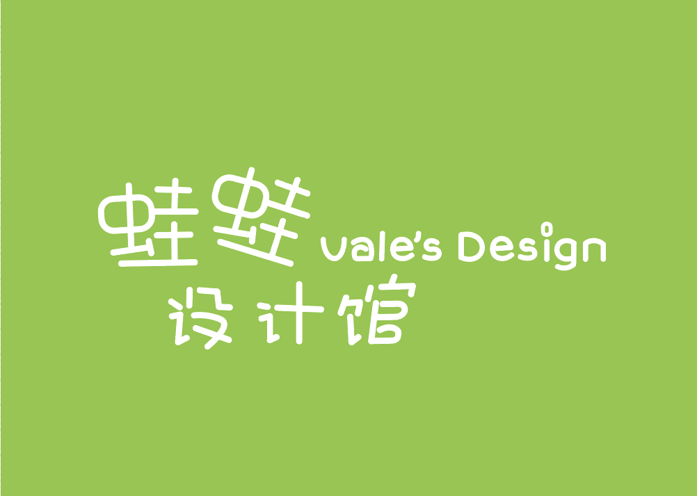
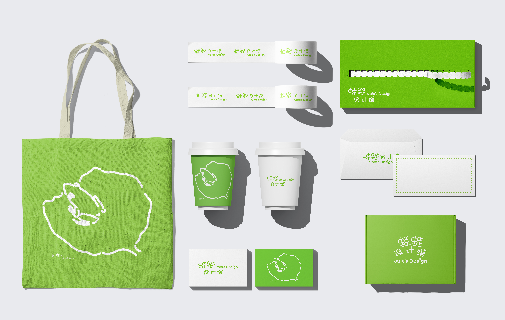
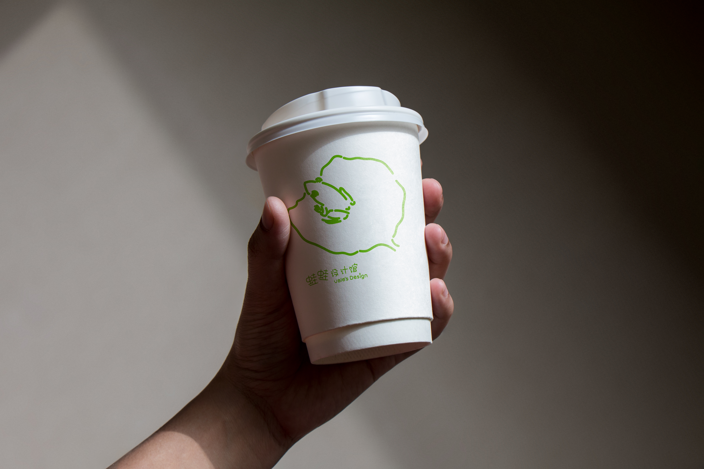
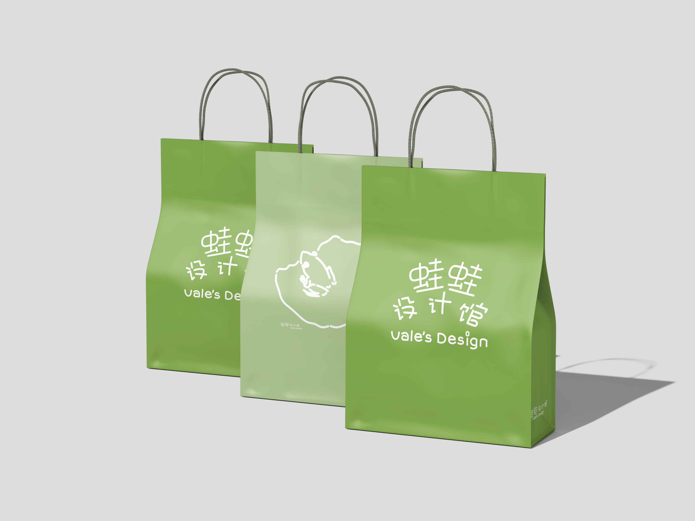
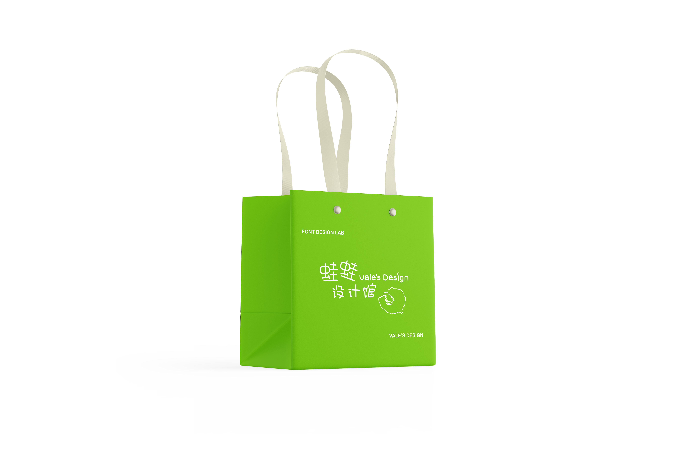
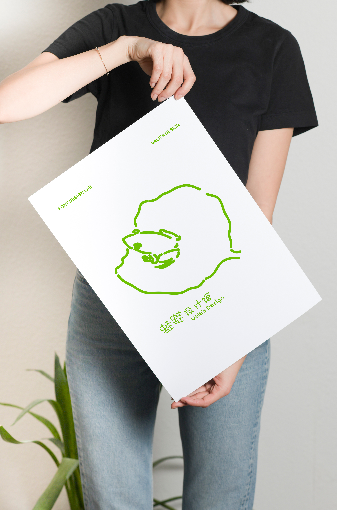
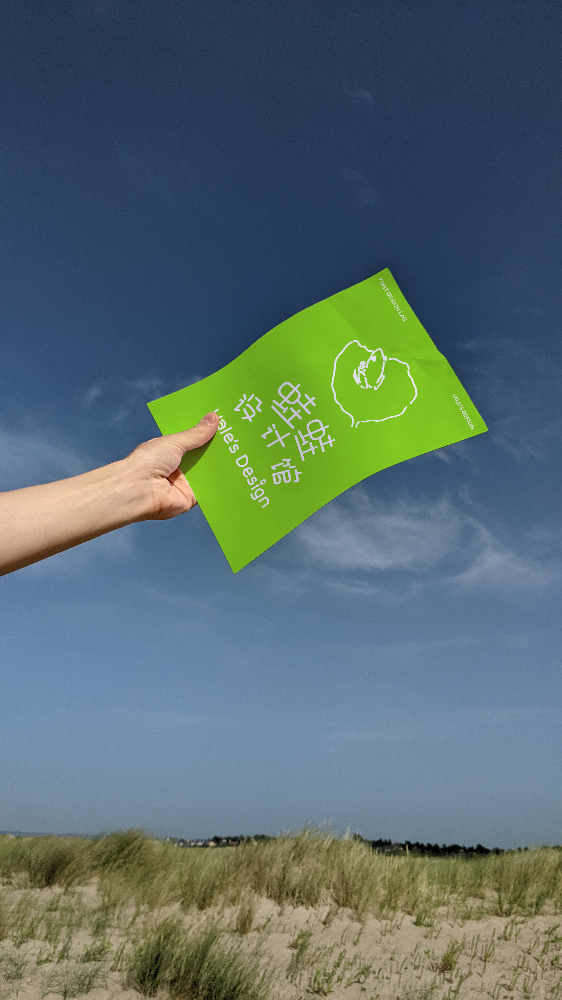

Selected work / 022026
WaWa
Logo Design
A self branding project developed during an online design course. Inspired by the nickname “Wawa”, which can mean frog in Chinese, I built a playful visual identity around rounded, bouncy shapes and bright green.

About the project
My contribution
- Developed a logo inspired by my name and nickname.
- Extended the identity through illustration and merchandise applications.
- Used a bright green palette to reinforce the playful visual language.
Focus & tools
Logo design · Illustration · Merchandise
Additional imagery
Identity in use




